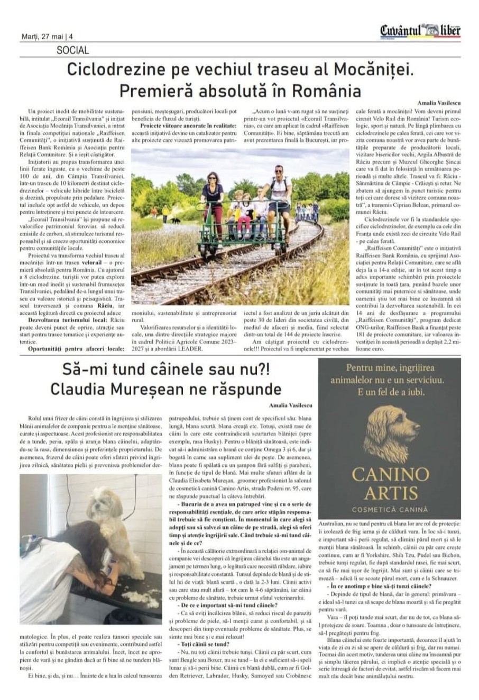
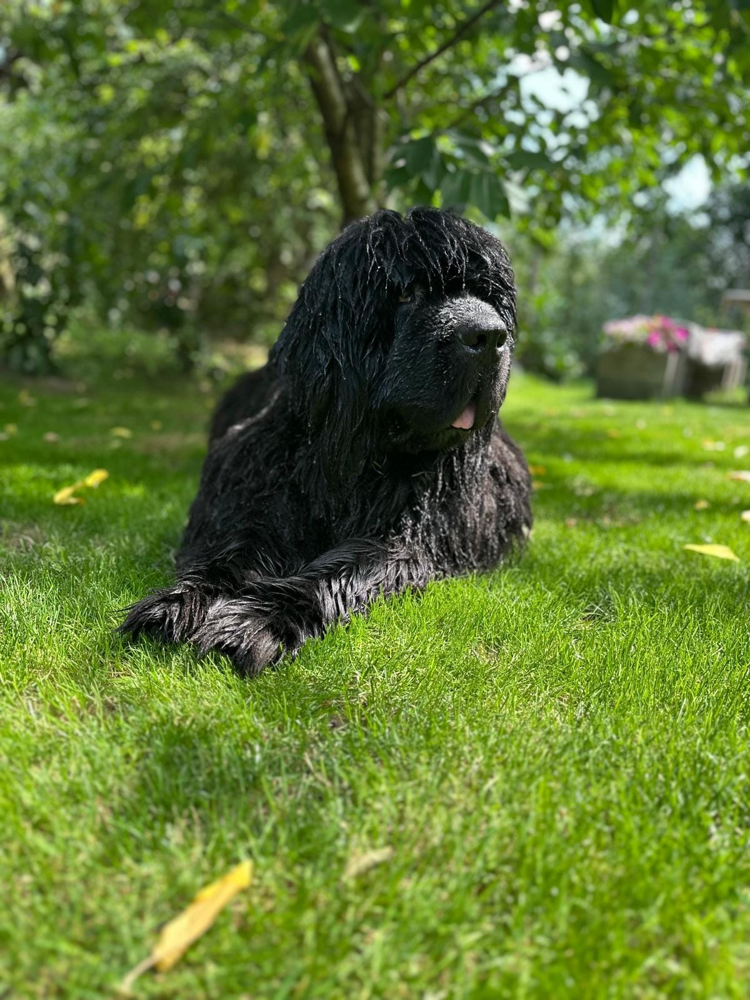
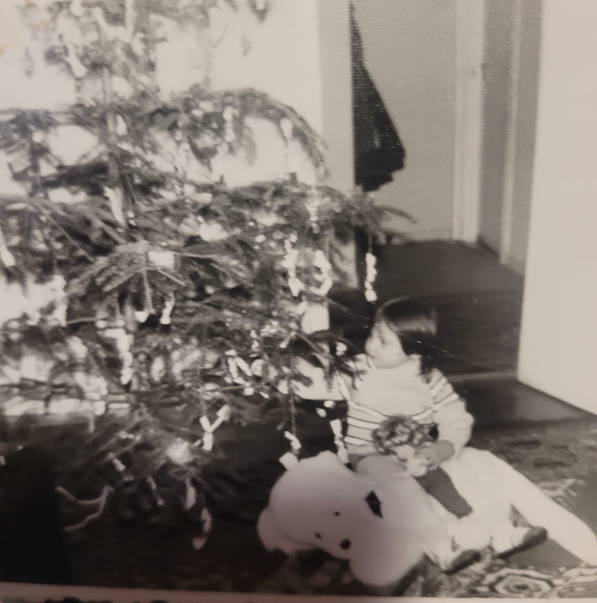
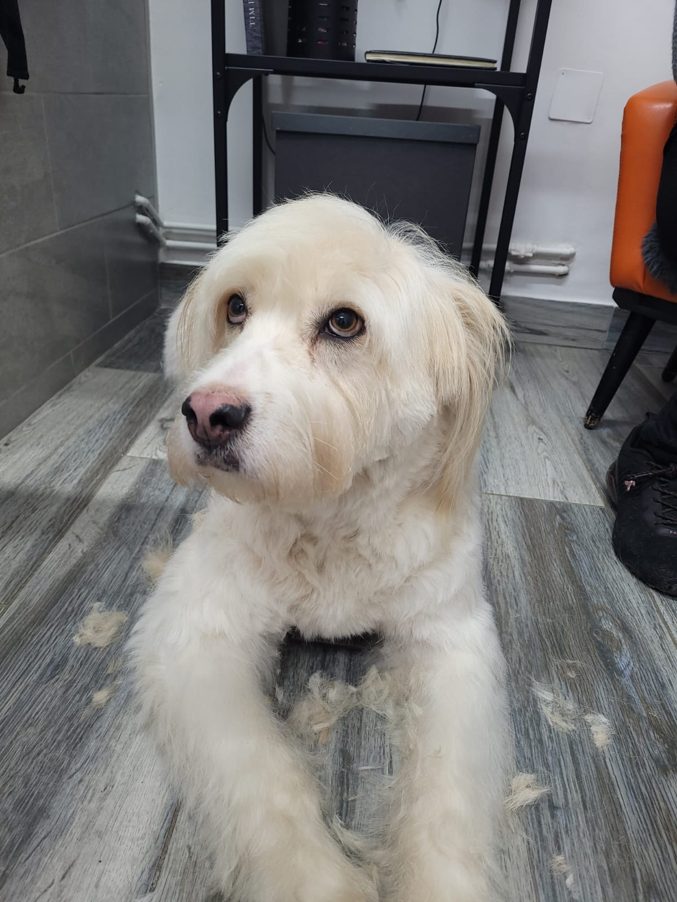
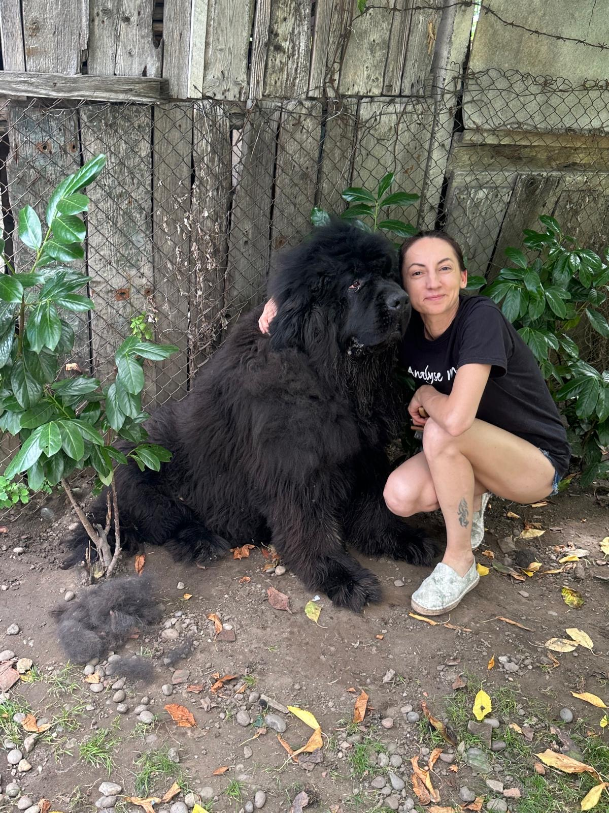
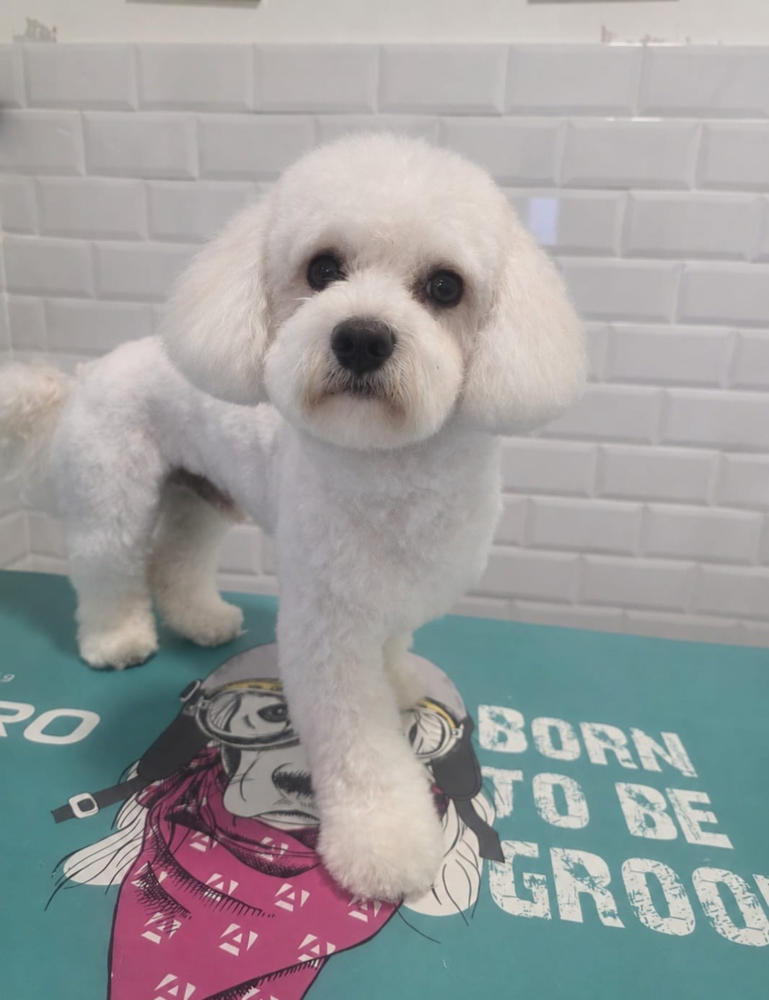
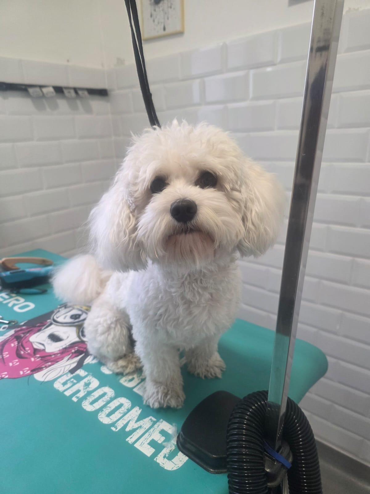
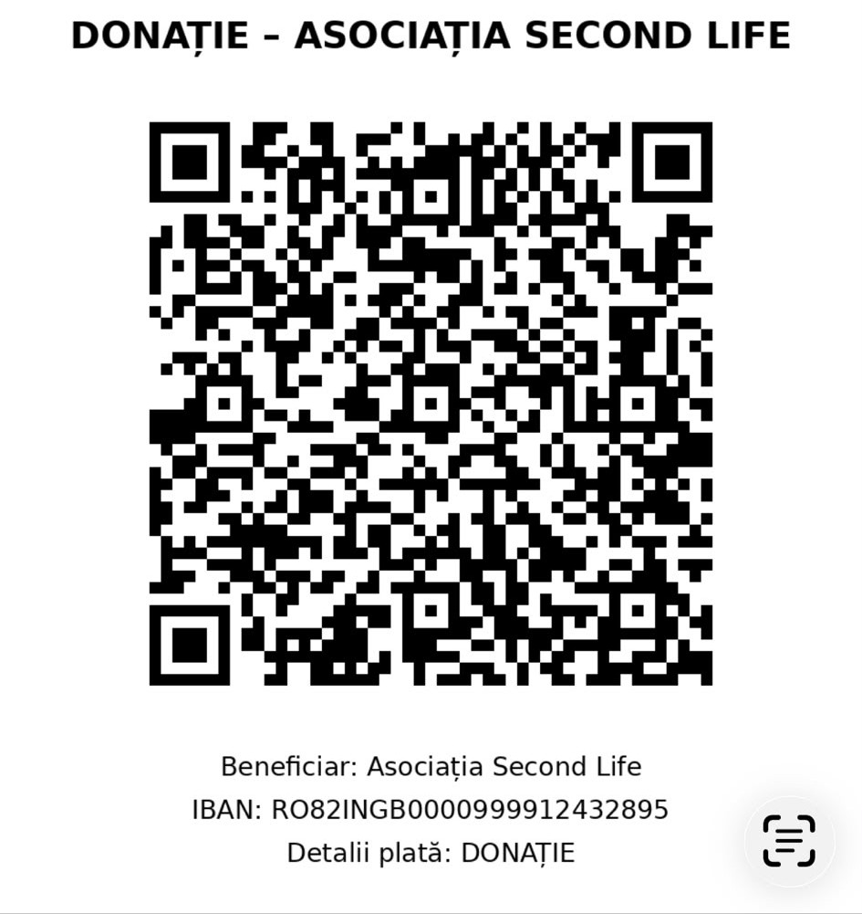

În presă
Canino Artis în presa locală
Menționată în presa locală pentru implicarea sa și binele făcut animalelor.



I’m a dog groomer and the person behind Canino Artis.
My story with dogs began with Topi, my first stuffed toy — a big white dog that I loved dearly. Then came the real dogs. As a child, I would bring home puppies, wash them and take care of them, much to my mother’s despair — although she is, in fact, a great animal lover herself.
My connection with scissors also began early. My grandmother was a hairdresser, and before becoming a dog groomer, I was a hairdresser myself. Looking back, the transition from human hair to dog fur feels almost natural.
Sara is my adopted dog, rescued through an animal welfare organisation in Cluj. When she needed grooming, I called a few places, but she wasn’t accepted because they were afraid that, having come from a shelter, she might bite.
I didn’t judge that decision — every groomer has to decide the conditions in which they can work safely. But I felt so sorry for Sara. I knew her, and I knew how gentle she was. And beyond any assumptions, she was simply a dog who needed to be groomed.
That experience stayed with me.

I opened Canino Artis in June 2025.
I love working with a dog whose coat is beautifully maintained and giving them a lovely haircut. But I find just as much fulfilment in working with a senior dog, a fearful or reactive dog, a dog who has come from a shelter, or a dog whose coat needs considerably more time and work to restore.
Because these dogs need grooming, too.
Since opening the salon, I have met many different dogs and encountered situations that have helped me grow professionally.
I believe in continuous learning and in building things properly, step by step. I continue to refine my technique because this profession always has something new to teach me.

Sometimes the right approach simply means allowing more time. Other times, it means taking breaks, changing the way I work, or providing grooming at home when a dog cannot come to the salon.
And in certain cases, when grooming cannot be carried out safely under normal conditions, it also means working together with a veterinarian.
I want every dog to leave well cared for and looking beautiful. But for me, the result doesn’t begin with the haircut.
It begins with the dog — with their coat, age, temperament, boundaries and individual needs.
Menționată în presa locală pentru implicarea sa și binele făcut animalelor.

Ședința, înainte și după ce lumina îi găsește.


Include baie, uscare, tuns, igienizare, tăierea unghiilor și curățarea urechilor.
Include baie, uscare și aranjarea feței, lăbuțelor și a zonei igienice.
Ședințele se fac doar cu programare. Pentru câinii care au nevoie de mai mult timp, rezervăm intervale mai lungi.
Pentru ca acest cod să funcționeze, deschide scanerul ING direct din aplicația ING și scanează codul QR.
